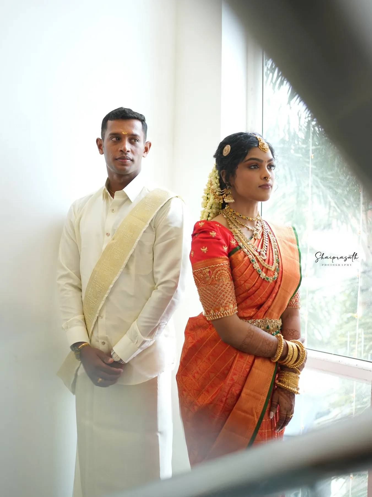
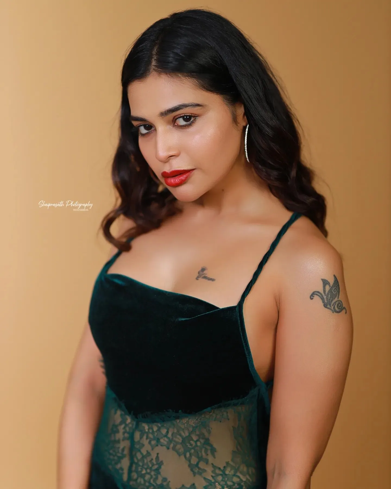

Services & packages
Life, through
our lens.
Every package is shaped around your family, your rituals and your venue. Prices below are where packages start — enquire for a proposal.


Weddingsதிருமணம்
Muhurtham to reception, and every ritual in between.
Kongu, Brahmin, Chettiar, Christian and Muslim weddings across Coimbatore and Tamil Nadu. Candid coverage of the whole day, family portraits made with patience, and a couple session woven in.
From ₹5,000



Pre & post wedding
Lakes in Kodaikanal, Chettinad homes, the bus stand where it started.
Outdoor shoots planned around a place that means something to you, with styling help, locations and a short film cut for Instagram.
From ₹5,000


Bridal portraits
The muhurtham look, photographed properly.
Studio and location portraits of the bride in her silk and temple jewellery, often made with Coimbatore's bridal makeup artists.
From ₹5,000


Maternityவளைகாப்பு
Waiting for the little one.
Gentle studio or outdoor sessions, including valaikaapu and seemantham celebrations with the family close by.
From ₹5,000


Baby & family
First smiles, first birthdays, whole families.
Themed baby shoots, first-birthday sessions and family portraits, at the studio or outdoors.
From ₹5,000


Fashion & brands
Sarees, jewellery, makeup artists and models.
Campaigns and lookbooks for boutiques, rental houses, jewellers and makeup studios across Coimbatore and Chennai.
From ₹5,000



Bookings & enquiries
Tell us about your day.
Share your date, the venue and a little about your family. We reply personally — usually with a few questions of our own.
+91 95005 88836Questions
Before you book
The things families in Coimbatore ask us most. Anything else, just call.
How much does wedding photography cost in Coimbatore with Shaiprasath Photography?
Packages start from ₹5,000. Every quote is then shaped around your family, your rituals and your venue — send us your date and venue for a proposal.
Which places do you cover?
The studio is in Gandhipuram, Coimbatore. We photograph weddings and shoots across Tamil Nadu, Kerala and beyond — from Kodaikanal and Chettinad to Kochi.
What kinds of weddings do you photograph?
Kongu, Brahmin, Chettiar, Christian and Muslim weddings. We learn your family's order of the day before the wedding so no ritual is missed.
Do you do pre-wedding and post-wedding shoots?
Yes. Outdoor shoots are planned around a place that means something to you, with location planning, styling help and a short film cut for Instagram.
Do you photograph maternity, valaikaapu and baby shoots?
Yes — gentle maternity sessions including valaikaapu and seemantham, themed baby shoots, first-birthday sessions and family portraits.
Do you work with bridal makeup artists?
Often. Our bridal portraits are frequently made together with Coimbatore's bridal makeup artists, in the studio or on location.
How do we book a date?
Call +91 95005 88836 or send an enquiry with your date, venue and a little about your family. We reply with a few questions of our own.